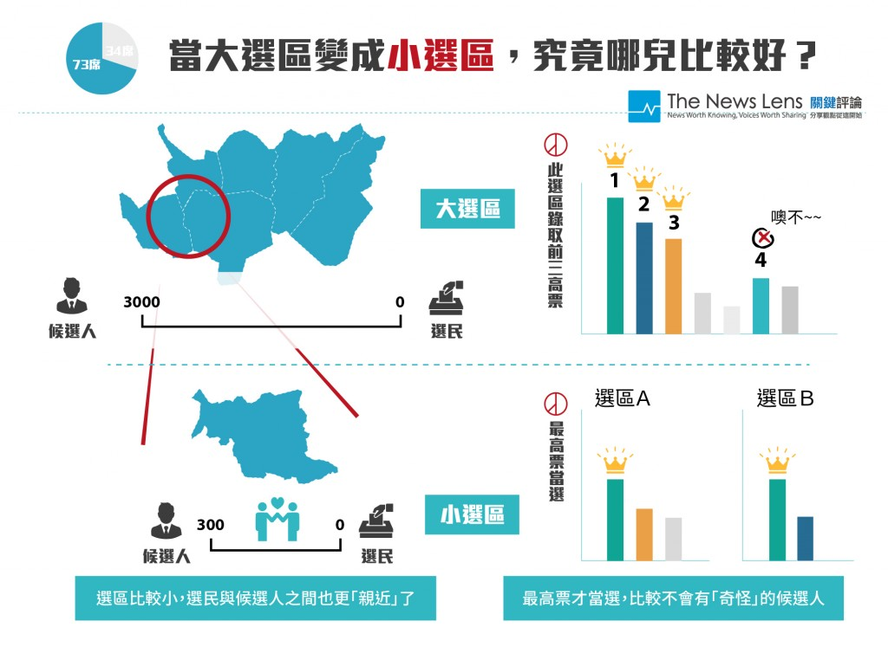
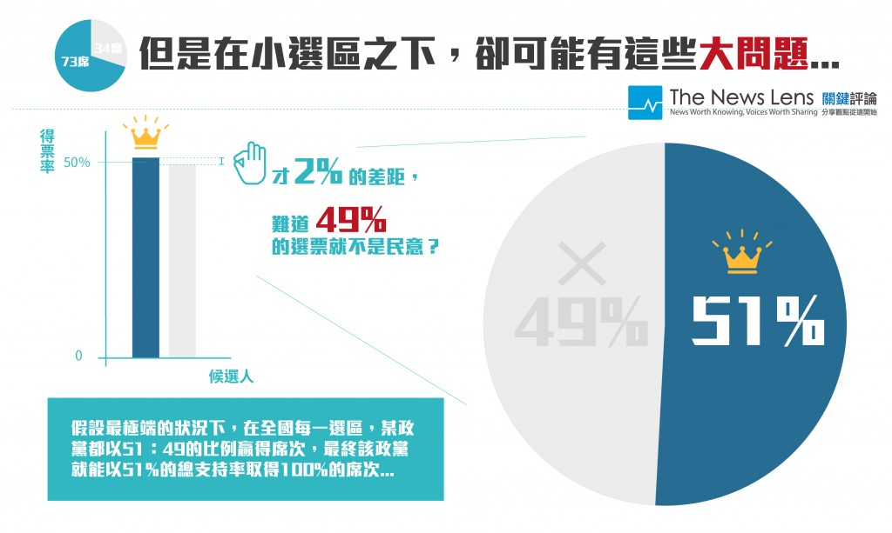
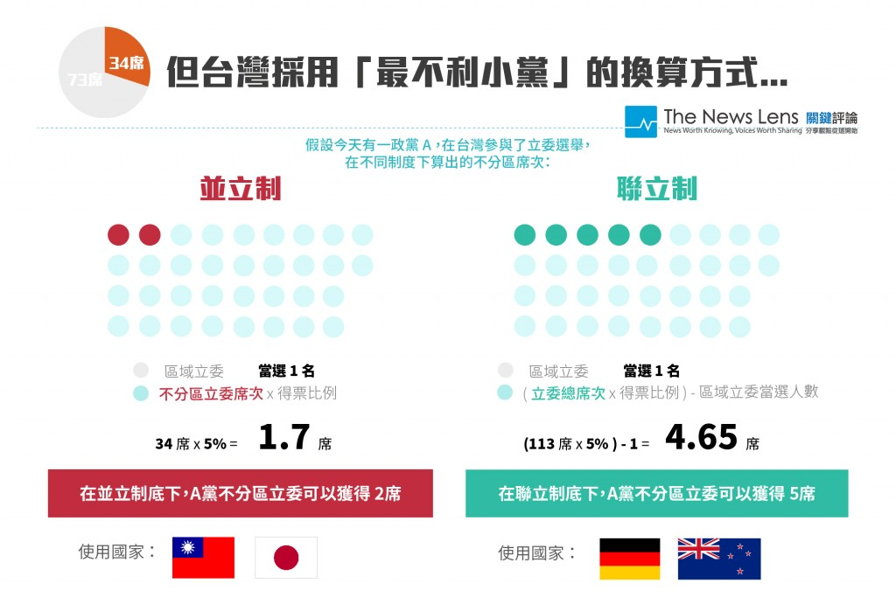
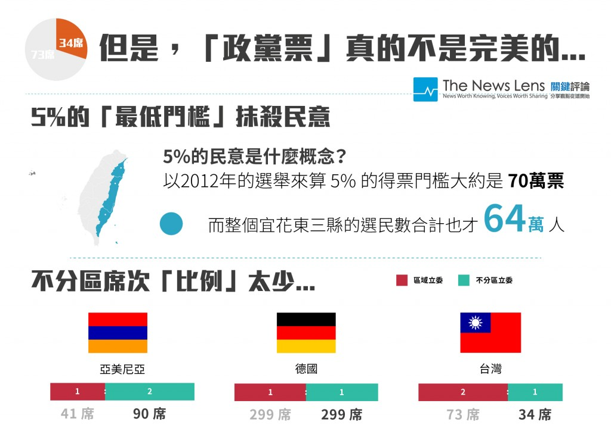
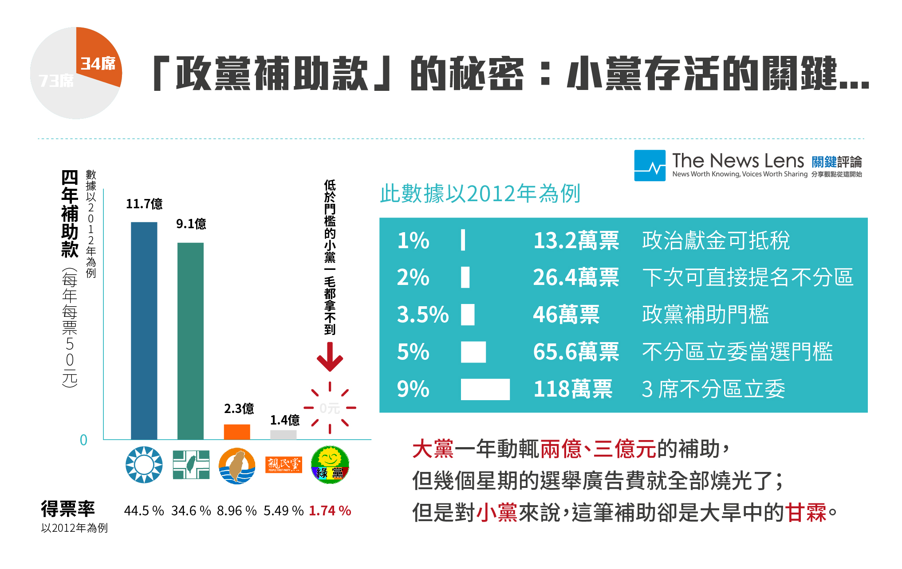

你所不知道的政黨票：台灣的「第三勢力」為何無法生存？
設計：游承穎｜文字：李牧宜、羊正鈺
讓我們先來回顧這十年來，也就是過去三屆，台灣的小黨（第三勢力）在我們的國會有多悽慘？
以2005年、2008年、2012年作比較，其中2008年立委選舉正式改制為「單一選區兩票制」，並且由原先的225席減半至113席，任期由3年改為4年（我們的馬總統上台、阿扁總統所代表的民進黨全面潰敗…）
►為什麼要改成單一選區兩票制？
►中選會
一般來說呢，選舉體制分成三大類：多數決、比例代表制，以及混合制。「多數決」就是指票數最多的當選，「比例代表制」則是按選票比例轉換成席位（主要是選黨不選人）。
咱們台灣在2008年後的新選制是採用「單一選區 / 兩票制」，也就是混合了多數決和比例代表制：每個人有兩張票，一票投「區域立委」，這票是投給人；第二張票則是投給政黨（政黨票），以選出「不分區立委」。
其中單一選區（小選區）下選出的區域立委共有73席，以政黨票決定的不分區立委則有34席。但立委總共有113席（73+34+6），另外6席是複數制選區的原住民立委（平地及山地原住民各3席）在此省略不談。
►單一選區兩票制解析
當然，不管是什麼制度，一定有些人喜歡～有些人不喜歡～ 接下來，就讓我們從「單一選區」及「政黨票」兩個面向來探討：

2008年開始，全台灣被分成73個地方選區（大選區/複數選區時僅劃分29區），並且採單一選區（每個選區只選出一人）簡單多數決，也就是票數最多的當選。
好處是什麼咧？
1. 選區比較小，選民與候選人之間的距離較為接近，「照理說」可以增進雙方的了解與互動。（大選區時選民多、候選人也多。選民不太可能認識每個候選人，同樣的，候選人也不一定要讓大家都認識才就有機會當選）。
2. 候選人比較不容易走「偏鋒」（只打特定議題、標新立異…），因為必須獲得最高票才能當選，所以都得拉攏中間選民。
（謎之音）選區的劃分又是另一門學問（漏洞？）►選舉制度的檢討

1. 對小黨極端不利
小黨在選區內獲得最高票有難度，如此有違民主/多元的原則（在大選區制度中，小黨候選人就比較有當選機會，因為它們只需要獲得散佈在大選區各地特定支持者的選票，就有機會了）
2. 「選票—席次」比例性最低，導致大黨獨大
單一選區再加簡單多數決，將造就一個過半數的優勢政黨。
如果每個選區只有最高票者可以當選，那些沒當選的選票，可以說是被刻意捨棄掉的，目的是選出一個政黨讓他們取得過半的席次，如此一來，在國會內推動法案時「可能」更加順利。
以台灣來看，國民黨從來沒有失去過國會中的優勢地位，甚至還曾經在2008年贏得超過七成的議席（81席，其政黨票得票率僅約51%）；光看區域立委，國民黨的得票率近54%，但是卻拿下61席（77%席位）。
雖然犧牲了「選票—席次」的比例性來成就這種「優勢政黨」，但立法院的議事效率真的有比較好嗎？
前面提到的「比例代表制」還記得嗎（敲頭）？也就是按選票比例轉換成席位。在台灣，選票指的就是「政黨票」。
席次指的就是不分區立委，也就是透過你可能很陌生的「政黨票」來「選黨」，政黨會提出一份不分區候選人名單，選民若是滿意那些人選，就直接把票投給該黨，以換算該黨可以拿下的席次。►不分區立委的意義
（舉例來說：2008年開始不分區立委有34席，而2012年國民黨獲得48%的政黨票，48%乘以34席 = 拿下16席不分區立委）
►「政黨票」線上公報｜一次打包各黨政見、不分區立委大比拼
「政黨票」的好康如下：
1. 分裂投票，解決人民對於政黨與候選人喜好不同的困擾
兩票制就是把「選人」的票與「選黨」的票分開，讓選民可以依自己的意願，選出中意的候選人和政黨，更加滿足選民的需要。
再加上，一般來說選民對候選人的印象比較模糊、短暫，但對政黨的印象，則是依靠長期的積累。所以政黨也必須更注重民意，這對政黨是一種無形的監督，有助於政黨政治的良性發展。
2. 更符合公平/民主的原則、避免「票不等值」的狀況
直接把對政黨的支持度換算成席次，不但完全反映民意，選民也比較不需要「策略性的選擇」自己的第二偏好，更不會有51%得票率就取得100%席次的狀況發生。
選民可依其對於政黨的長期印象以及（不分區）候選人名單，做出對於政黨整體支持度的表示，更符合「一人一票」「票票等值」的原則。
ps. 無值票則是指投給落選人的票。高值票是指候選人以很少的票數就當選了，而低值票則是候選人以高票當選，可見每張選票的價值不相同。►「票不等值」造成的問題

台灣採用不利小黨的「並立制」換算席次方式（而非德國的「聯立制」）
缺點是什麼呢？例如2012年親民黨獲5.48%的政黨票得票率，但是在總席次方面只能得到5.48%乘以34席的不分區名單，也就是分到2席立委（佔總席次的1.8%）；若是採取「聯立制」，則應該得到5.48%乘以113席總席次，也就是得到6席立委。
不要小看這「一兩席」的差別…
立法院的規定是，只要超過三席就能組成黨團（四席未參與黨團立委，可組政團），就能夠參與「朝野協商」；而且，若增加不分區席次，產生多一點小黨的立委，也可以參加到各個委員會（立法院設有八個常設委員會）參與法案的實質審查、質詢官員、監督政府預算。
並立制 vs. 聯立制（簡易算法）
甲國國會議員200人，分區及不分區各半；K黨在各區候選人總共當選了10人，而政黨得票數是全國政黨得票率30％，依並立制算法，不分區可分得100＊30％＝30席，共得40席。
若是在聯立制下，則K黨分區得10席；政黨得票30％的話，國會200席中，K黨應占30％，故應有60席。所以扣除分區的10席外，不分區應另撥給K黨50人，以達60席。
若是在聯立制下，則K黨分區得10席；政黨得票30％的話，國會200席中，K黨應占30％，故應有60席。所以扣除分區的10席外，不分區應另撥給K黨50人，以達60席。

1. 最低門檻5%的設計，有可能抹殺民意
要超過門檻才能夠換算席次，比如我國的5%與日本的2%，當初主要是為了避免小黨林立造成政局不穩，但同時也會抹殺民意。像是2008年的選舉中，所有小黨的政黨票加起來拿下快11%，但個別小黨都沒超過5%，導致有多達11%的民意無法表達。
簡單來說，區域立委只有大黨可能獲勝，小黨只有可能靠政黨票取得不分區席次，如果政黨票這招也無效…Orz
2. 「不分區席次」佔國會比例過少
台灣的不分區席次佔總席次的比例太低（34席 / 113總席次），許多國家不分區席次至少佔總席次的一半、或是更高，才能保障小黨能夠利用不分區席次進入國會、彌補單一選區只有大黨才能當選的不足。
區域立委太多，也有可能只是更多立委在做選民服務（像是跑紅白帖、「喬」事情）或是在推法案時太過於區域為考量而忽略了整體國家利益（例如地方民代爭取讓高鐵多停一站，結果高鐵愈開愈慢）。

什麼是「政黨補助款」？
依據選罷法，在立委選舉政黨票部分，得票率只要超過3.5%，即可得到「每年」每票50元的政黨補助款，國民黨連續4年中，「每年」都可領到2億9千3百萬元左右，民進黨也可以拿到每年2億2千8百萬元左右。
但這個門檻卻對小黨來說極為不公平，從2012年選舉中以綠黨為例，拿下超過20萬的得票數（1.7％）照理說也應該拿到每年約1千萬元的補助，但最後卻什麼都領不到。►關於政黨補助款
ps. 德國的聯邦憲法法院曾宣告補助的高門檻違憲，目前其政黨補助金得票率門檻僅0.5％。
民主政治不是只強調少數服從多數，投票制度也不只是數人頭這麼簡單。政治學大師李帕特將民主國家分成「多數決」、「共識決」。
他認為，在社會結構同質、不存在重大爭議的國家，較適合使用多數決，讓政黨體系以兩黨制為主，以少數服從多數的原則，追求更快速、中央集權式的決策方式。
另一方面，在高度多元分化、族群組成複雜、充滿重大憲政爭議的國家，較適合採用共識決的制度。它可以賦予少數族群政治代表權，特別是避免讓小黨被排除在外，並以協商的方式讓國家的重大公共政策能夠取得儘可能多數的民意基礎，讓政策長久且穩定。
按照李帕特提出的幾項制度檢證標準，台灣是屬於多數決民主制。不過，看看這些年來台灣的政治紛亂，尤其是重大決策、統獨立場的分歧，我們真的應該好好地想一想，台灣到底適合「多數決」還是「共識決」？
►選舉制度ABC影片版：
特別感謝【公民監督國會聯盟】以及【菜市場政治學】共同編輯陳方隅的指導與協助。
責任編輯：羊正鈺
核稿編輯：楊之瑜
核稿編輯：楊之瑜
SHARE：